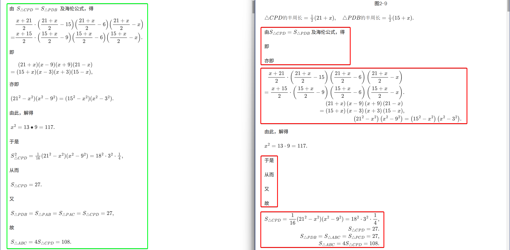
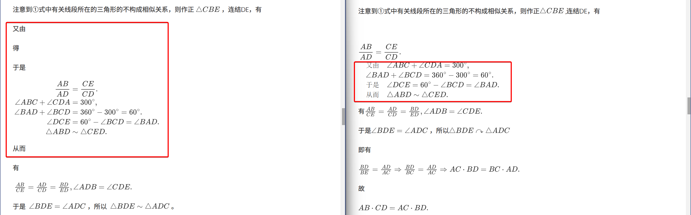
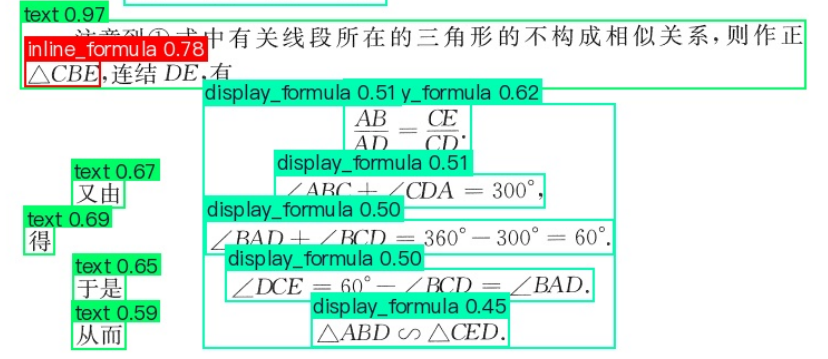
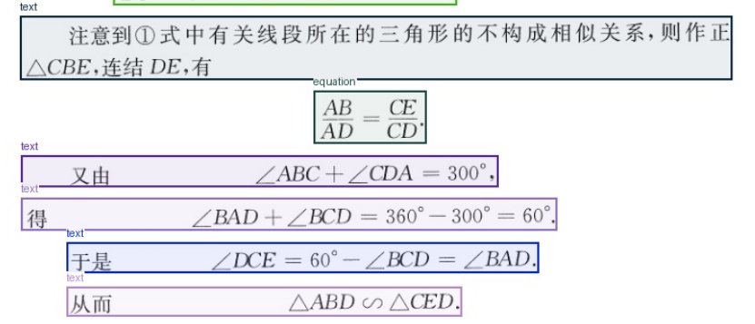
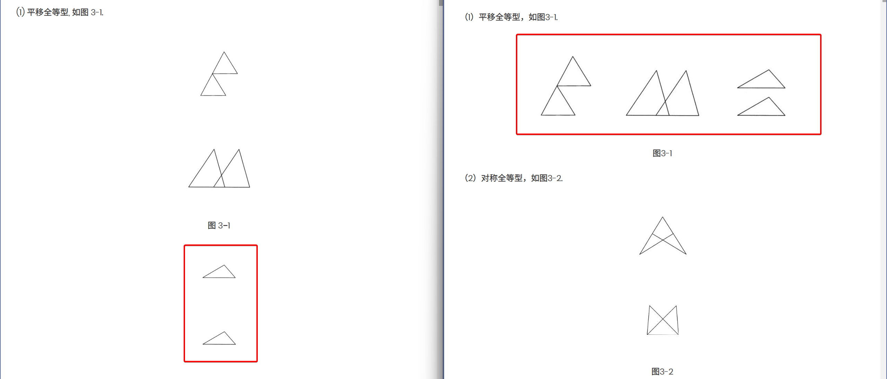
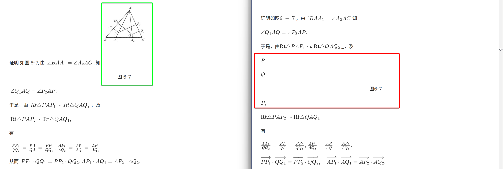
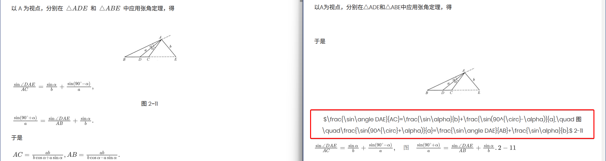
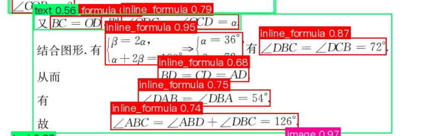

关于PaddleOCR-VL和PaddleOCR对数学类书籍识别的对比
之前成功安装PaddleOCR-VL之后，就尝试使用再次对小蓝本进行OCR，这样就可以和之前的结果进行对比。
其实上篇文章本来就想写这个的，结果写着写着发现最新版的PaddleOCR-VL支持Windows和Kaggle部署了，然后就跑题了。。。
这里提一句，PaddleOCR-VL的文档有两个，分别在
里面。
目前PaddleOCR文档里面的内容更新得快一些。
1. 坎坷的使用过程
使用PaddleOCR-VL的过程的非常坎坷。出现的问题在前文中已有叙述。开始是根本运行不了。后来升级了PaddleX之后，成功运行模型，但是又遇到了显存不足和程序卡死的问题。
刚开始使用我就发现使用PaddleOCR-VL占用的显存甚至比DeepSeek-OCR还要多，和官方宣传的「小」模型完全不符。而且最大的问题是，随着推理的进行显存占用越来越多。
大致猜测一下原因，应该是由于笔记本默认把一半的内存列为共享显存，导致程序以为实际可以使用8+32=40G显存，所以就不着急释放占用的显存了。
在Kaggle上运行的时候，显存也在一直增加，但是最终没有报错。
好在，最终是通过手动释放显存和修改显存分配策略解决了。
确认可以正常运行之后，我想让它利用晚上睡觉的时间跑完OCR。看着识别第1本书运行正常就去睡觉了。然后早上起来发现就只有前两本书正常跑完了，跑到第3本书的时候程序就卡死了。后来我又多次复现了这个问题，但是始终没有找到原因。
不过中间有一次我把下载的模型删掉之后重新下载，后来就没有再出现这个错误了。
2. 结果对比
在下面的对比中，如果没有特殊说明，默认左侧是PaddleOCR-VL的结果，右侧是PaddleOCR（PP-StructureV3）的结果。
2.1. 退化
相交于PaddleOCR，PaddleOCR-VL最大的进步在于此，终于没有再出现退化的情况了（可喜可贺）。
2.2. 排版
2.2.1. 进步
应该说，PaddleOCR-VL的排版模型有了很大的进步，例如

2.2.2. 缺点
但问题也没有完全解决，例如

查看生成的可视化图像，可以看到
PaddleOCR-VL把每行里面居中的公式都视为了行间公式。这个本身到不要紧，但是最后把它们合并视为一个公式，这就造成了最终的排版错误。
我尝试把产线配置里面 layout_merge_bboxes_mode 中 display_formula（有注释）对应的选项从 large 改为 union，这时可以看到

模型其实最开始是识别到了每行的公式，然后又把它们组合了起来。
如果改为 small 的话，倒是不组合到一起了，但是输出顺序还是有问题：
而这是DeepSeek-OCR的识别结果：

在修改的时候，一定不能把 inline_formula 对应的选项改成 small，否则会造成有含有行内公式的段落只保留公式，不识别文字：
不过，又看了一下识别正确的情况：
没想明白它到底是如何区分行内公式和行间公式的。。。
2.3. 图片
2.3.1. 进步
PaddleOCR-VL的图片识别有所进步，终于能够分割一行的多个图片了：

不过最终还是过度分割了。。。
另外，PaddleOCR-VL也没有出现之前识别到图片里面的字母而没有正确识别出图片的情况：

PaddleOCR-VL对于图片标题的识别也有进步：

能够正确区分图片标题，不会把它和其它部分混到一起。
2.3.2. 缺点
不过，从上面个对比中也可以看到PaddleOCR-VL的问题。就是它明明已经识别到了图片和图片标题，但是却没有把它们放到一起。这就导致大部分图片和对应的标题都是分开的。这点比起PaddleOCR模型是大大的退步。
看了一下版面阅读顺序识别的结果，里面没有指定图片和图片标题的输出顺序，有可能是这个原因造成的：

2.4. 数学公式
2.4.1. 进步
PaddleOCR-VL相比之前的模型在数学公式方面的进步主要有一下几点：
其一，就像之前说的，没有出现退化的情形。
其二，PaddleOCR-VL在特殊符号的上的识别上要好的多，甚至比DeepSeek-OCR还要强。例如，

PaddleOCR-VL在大部分情况下能够正确识别「相似」、「平行」和「垂直」的符号，不像之前PaddleOCR模型大部分都识别不出来。
不过还是有识别错误的情况：
其三，之前PaddleOCR经常出现一个愚蠢地错误，就是识别不出公式里面的「减号」：
PaddleOCR-VL没有发现这个问题。
其四，基本没有出现因为行内公式导致的整段文字漏掉的情况：

其五，PaddleOCR-VL对于文字和公式的分割要准确很多：
虽然有时还是会犯错误。
但是，对于简单的字母和公式，PaddleOCR-VL还是更倾向于不把它们识别成公式。这点倒是没有改。
2.4.2. 缺点
相交于之前，PaddleOCR-VL也带来了两个以前从没有出现的问题。
一个是PaddleOCR-VL多次出现识别了公式但是没有把它放到正确环境里面的情况，如
看了一下显示版面区域检测的结果，确实是识别出行内公式了：

看来是最终输出部分的问题。
另一个是PaddleOCR的行间公式的输出比较混乱。
同一个公式，例如下面的公式：
DeepSeek-OCR转换为 \[\sin{x}\]，PaddleOCR转换为 $$\sin{x}$$，都没有问题。
而到了PaddleOCR-VL，它则是一会儿转换为
1 | $$ \sin{x} $$ |
（注意 $$ 符号两边都有空格），一会儿转换为
1 | $$ |
（还是 $$ 符号两边都有空格。）
一会儿又转换为
1 | $$ \sin{x} |
有时还会把行间公式和文字放到一行。
这本身倒没什么问题，只是在做正则替换的时候要格外小心。
看来PaddleOCR-VL和PaddleOCR对数学公式的训练用的是完全不同的样本？
3. 总体评价
整体来看，PaddleOCR-VL相比PaddleOCR有明显的进步，但是仅对数学书籍的OCR识别来看，效果还是不如DeepSeek-OCR。
问题不是出自文字识别或公式识别本身（这方面PaddleOCR-VL实际上更强一些），而是出在排版算法上。